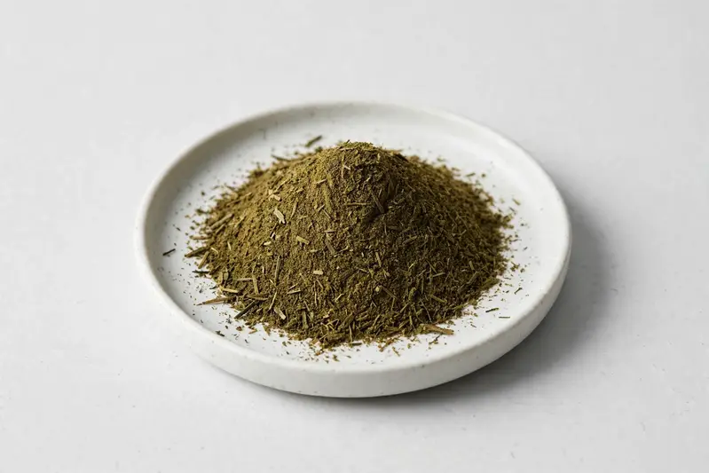

Sweet wormwood — Artemisia annua extract positioned around fragrance and botanical-ingredient formulations.

Overview
Sweet wormwood extract is prepared from Artemisia annua aerial parts and is commonly requested on an artemisinin-content basis for botanical-ingredient and fragrance sourcing. Buyers in fragrance and botanical-formulation categories often specify artemisinin orientation. As a Xi'an trading company, we source sweet wormwood extract through partner producers and confirm grades and documentation only after reviewing your target specification.
Specifications below reflect commonly requested options in the market — not a stock list. Share your target spec and we'll confirm exactly what we can supply, honestly.
| Specification | Details |
|---|---|
| Botanical identity | Sweet wormwood aerial-part extract powder (Artemisia annua) |
| Marker compound | Commonly requested spec grades: artemisinin content 1%-10% (HPLC); actual specs confirmed on inquiry. |
| Appearance | Greenish-brown to dark olive-brown fine powder |
| Mesh size | Typically 80–100 mesh (confirm per inquiry) |
| Testing | COA/TDS arranged on request; scope agreed per your spec |
Applications
Documentation
We don't claim in-house labs or certifications we don't hold. COA and TDS documents can be arranged on request, and testing scope is agreed against your specification before supply.
FAQ
Related products
Diosmin (citrus-derived flavonoid)
Key marker: Diosmin 90%+
View specs →Phaseolus vulgaris
Key marker: Phaseolamin 1-2%
View specs →Morus alba
Key marker: DNJ 1%
View specs →Osmanthus fragrans
Key marker: Aromatic Flower Grade
View specs →Avena sativa
Key marker: Beta-Glucan Content
View specs →Send your target spec and volumes — we'll respond with a tailored quotation.
Request a Quote